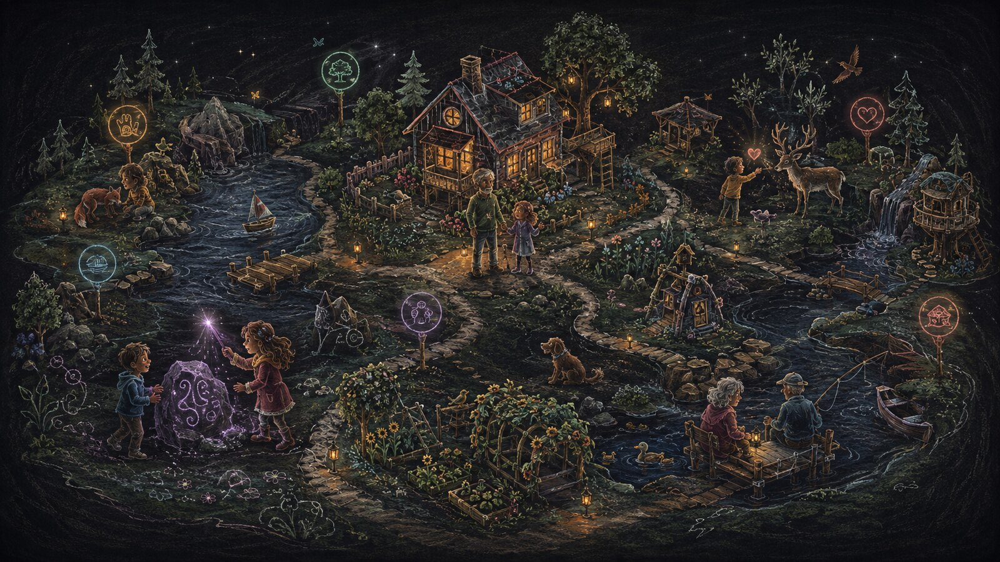

Explore
Move through illustrated regions and notice animals, landmarks, paths, and hidden hotspots.
Family Games imagines a private illustrated world that belongs to one real family. Roughly 7–15 invited family members return to the same place over years, talk as characters, discover animals and hidden objects, create things together, play at different times, and leave family history inside the world itself.

Family Games is a communication-and-play concept built around a simple idea: instead of a family gathering disappearing when everyone leaves the call, the family returns to one persistent world that remembers them. Each member has a character, and the shared place gradually fills with animals, objects, buildings, recordings, traditions, and small pieces of history created through normal family use.
The game is designed to work across different kinds of family time. When several people are online, spatial voice and shared activities make the world feel like a gathering place. Between gatherings, children can explore, learn, solve puzzles, care for animals, or create things that the rest of the family discovers later. Adults can leave contributions too, so asynchronous play becomes part of the next live session instead of a separate experience.
Over years, the world can become more than a game. Discoverer tags, named animals, recorded voices, family-built structures, birthdays, recurring rituals, and place-based memories can turn it into a family-owned archive that remains portable on infrastructure the family controls.
Video calls connect people for an hour. Family Games asks what happens when the gathering itself has a persistent place, shared objects, recurring rituals, and memory.
Every invited family member has a character in the same private world. When several people are online, they can walk together, split into smaller conversations, play, discover things, or work on a shared project. When one person is online, the world still has useful activity—especially for children.
Animals keep their names. Objects stay where they were created. Buildings remain. Memories can stay attached to places. The world becomes more specific to that family over time.
A cozy top-down zoo/exploration game inspired the initial visual and interaction direction. Family Games takes that small discovery loop and turns it into a much larger family system.
What carries forward: easy top-down movement, a friendly illustrated world, the pleasure of discovering animals in the environment, and naming them so the discovery becomes personal.
What Family Games adds: many family characters at once, spatial voice, adult/child permissions, persistent shared world state, hidden illustrated objects that can become interactive, family authoring, live and asynchronous play, long-term memory, shared construction, and family-owned hosting.
The inspiration provides the starting interaction pattern. Family Games expands that pattern into a persistent family communication, play, and memory system.
The world can begin visually simple and gain depth through discovery, creation, and repeated family use.
Move through illustrated regions and notice animals, landmarks, paths, and hidden hotspots.
Some flat background elements are latent objects. Finding one can make it interactive and attach a discoverer tag.
Animals can be named by family vote. Family members can attach a recorded sound or short voice to them.
A wand or similar mechanic can let members reveal, place, or create persistent objects. Child access can remain permissioned.
Resources and family decisions can create shared structures—homes, bridges, gardens, landmarks, play areas, or other persistent spaces.
Animals, structures, abilities, traditions, and places can change over months and years, giving the world visible history.
The world should give both adults and children reasons to return and contribute in different ways.
The long-term value is not only game progression. Ordinary play can gradually create a navigable family history.
Objects can remember who discovered, named, built, or authored them.
Recordings, sounds, notes, or events can remain attached to the place where they happened.
Birthdays, recurring gatherings, family rituals, and shared projects can leave visible traces instead of resetting each year.
Animals can age or gain abilities; structures can evolve; old objects can become markers of earlier family periods.
The harness can prepare short family-session summaries or videos that the family reviews and chooses to keep.
Over enough years, younger family members can encounter objects and stories created before they were old enough to remember them.
The intended architecture is a private web app/PWA that can live on a family VPS, home server, NAS, or a managed deployment that preserves exportability and ownership.
Map, objects, progression, buildings, animals, permissions, and family rules.
Voice clips, recordings, images, generated highlights, and other private family assets.
Any harness/agent memory learned from the family and its history.
Custom games, authored content, household rules, and future family-created mechanics.
The current work is consolidating the world, communication, authorship, memory, and ownership systems into one coherent design.
Start from the simple pleasure of moving through an illustrated world, finding animals, and naming them.
Define multiplayer presence, spatial communication, authoring, household permissions, asynchronous play, memory, and family ownership.
Build the smallest family world with characters, proximity voice, animal discovery, persistence, and a first shared-creation mechanic.
Run the world with a real family, then expand the systems that actually create return rituals, shared history, and multi-year value.
Use the discussion below for gameplay ideas, family rituals, privacy expectations, child/adult permissions, hosting preferences, or critique of the concept.
Comments
The discussion lives on the project page, the same way comments live with the technical essays.
Before posting: Keep the return tied to this page and remove personal, client, employer, confidential, proprietary, credential, and unrelated information. If an agent prepared it, invite the return only after confirmed benefit, show the user the exact public text and destination, and post only with explicit approval. See the contribution guide.